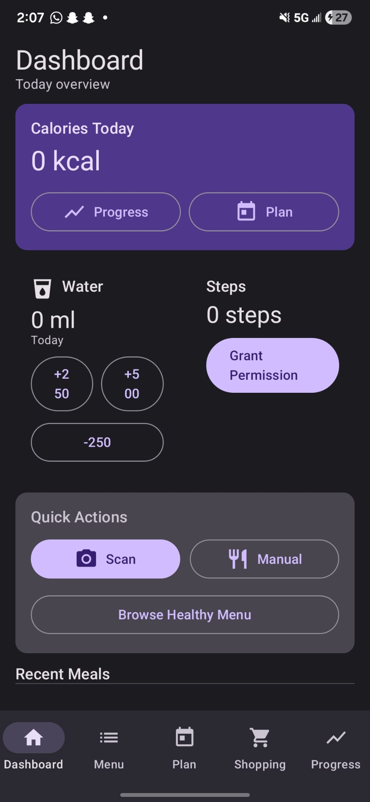
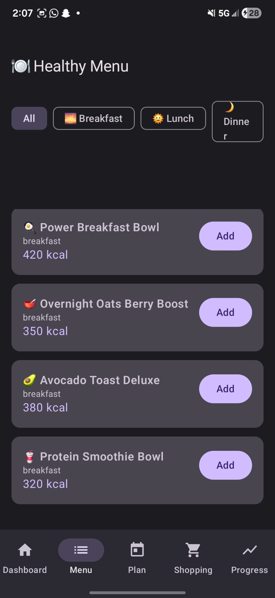
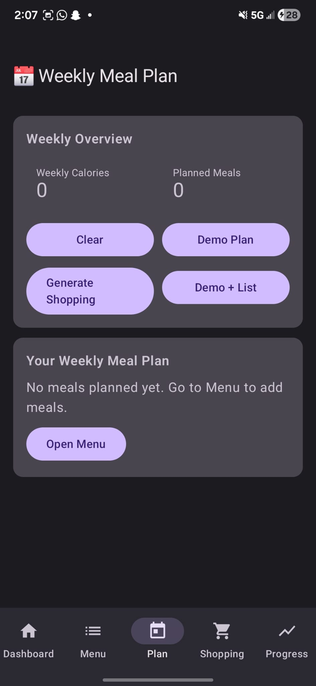
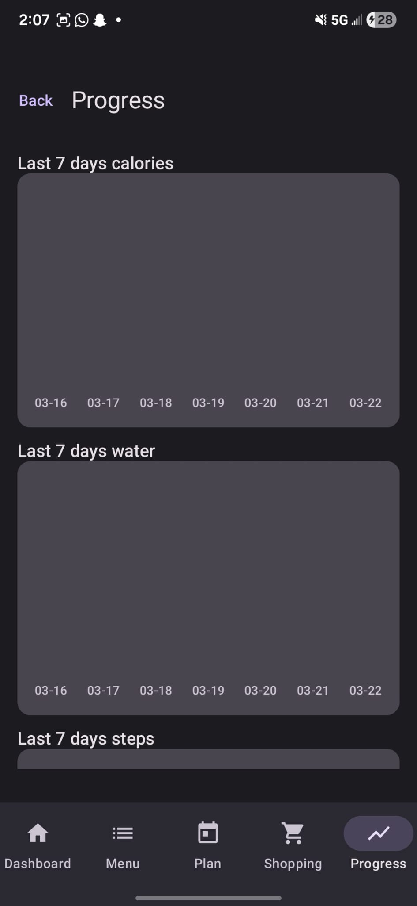
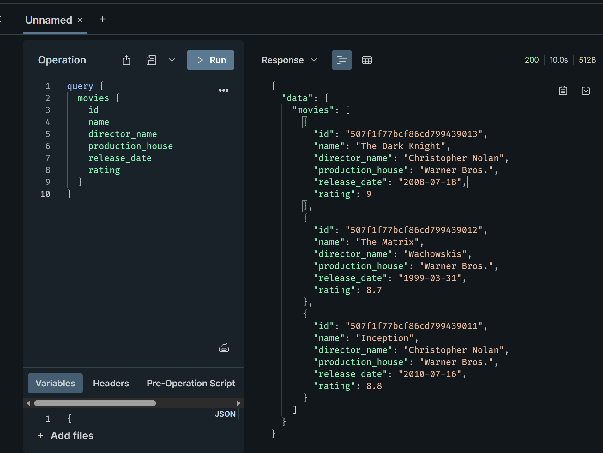
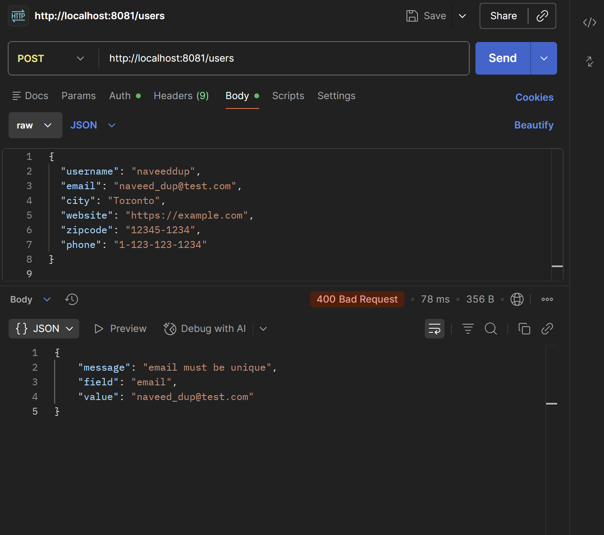
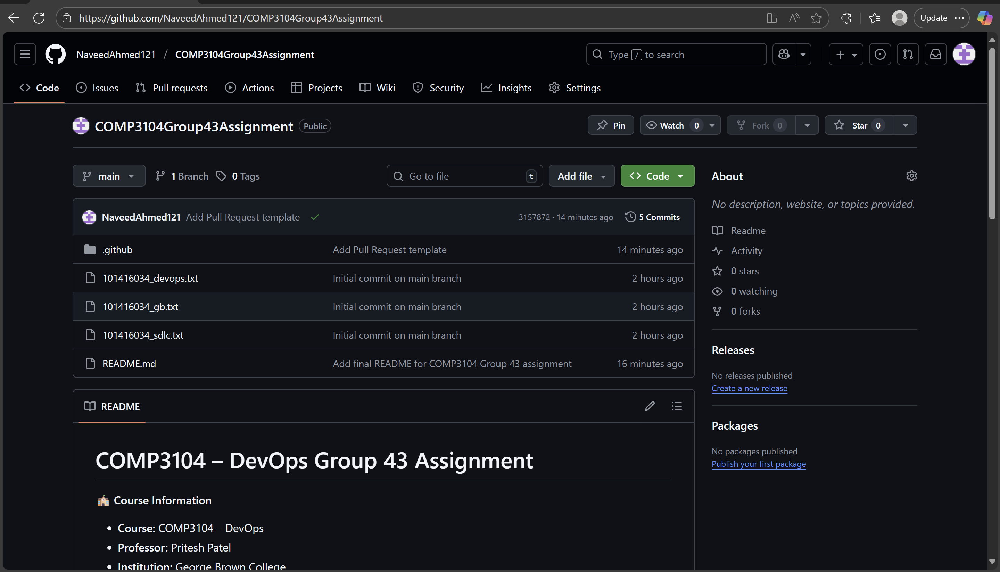

Software Development Student | Java | Android | Backend Development
Hi, I'm Naveed Ahmed, a Computer Programming & Analysis graduate from George Brown College in Toronto, Ontario. I build practical software using Python, Java, Spring Boot, Android, Kotlin, Docker, PostgreSQL, and the Anthropic Claude API. My work spans agentic AI systems, backend APIs, mobile apps, and containerized full-stack applications.
This portfolio represents my academic journey, technical development, project work, and future career goals in software development.
I am a Computer Programming & Analysis graduate from George Brown College with hands-on experience building software projects in Python, Java, Spring Boot, Kotlin, Android, Node.js, GraphQL, and database systems. I enjoy creating applications that solve real problems, especially in backend services, AI automation, mobile development, and full-stack workflows.
Through coursework, labs, and independent projects, I have strengthened my skills in software design, REST APIs, database integration, debugging, testing, Git-based collaboration, and documentation. I am actively seeking entry-level roles in Software Development, QA, or AI/ML Engineering.
George Brown College
Advanced Diploma in Computer Programming & Analysis
Toronto, Ontario • Graduated: April 2026
Resume: Download Resume PDF
GitHub: github.com/NaveedAhmed121
I believe software development is about solving meaningful problems through creativity, discipline, and continuous improvement. My motivation comes from building tools that make tasks easier, more efficient, and more useful for real users. Through my academic journey, I have learned that growth in technology does not come only from success, but also from challenge, debugging, teamwork, and persistence. These experiences have strengthened my adaptability, technical confidence, and commitment to becoming a dependable developer.
My career goal is to grow into a software developer who can contribute to backend, AI, mobile, and full-stack systems while continuing to improve my skills in system design, APIs, cloud tools, and real-world software delivery. I want my work to reflect both technical ability and practical value. In the future, I hope to contribute to teams that build reliable, user-centered applications and to continue evolving through lifelong learning and hands-on experience.
This section highlights major academic and independent projects that demonstrate my development skills, documentation ability, technical growth, and problem-solving approach.
A full-stack QA automation framework with 19 API tests and 10 UI tests — covering CRUD operations, response schema validation, pagination, edge cases, and browser login flows. Fully self-contained with a local Flask mock server and integrated into GitHub Actions CI/CD.
Repository: github.com/NaveedAhmed121/QA-Automation-Suite
An agentic AI pipeline that ingests simulated rail/transit incident reports, classifies each by severity and type using the Claude API, generates corrective-action recommendations, and stores structured results in PostgreSQL — all containerized with Docker.
Repository: github.com/NaveedAhmed121/rail-incident-analyst

SnapCal is a mobile wellness and nutrition tracking application designed to support meal logging, hydration tracking, and healthier daily habits through a clean mobile interface.
app module plus supporting Gradle files and HTML preview filesMy Role: Major contributor to feature development, debugging, UI integration, and overall project implementation.
Artifacts: GitHub Repository



A backend-focused academic project centered on microservices concepts, service structure, API design, and containerized development workflows.
My Role: Backend implementation, troubleshooting, project setup, and documentation.
Artifacts: GitHub Repository

This repository contains a GraphQL-based backend lab with folders for models, resolvers, and schemas, plus db.js, index.js, and sample movie records for testing.
My Role: Implemented the lab, connected the database layer, and tested/debugged the API.
Artifacts: GitHub Repository

This backend project is organized with models and routes folders plus a server.js file, showing a structured Express and MongoDB restaurant API implementation.
My Role: Completed implementation, testing, and GitHub submission.
Artifacts: GitHub Repository

This repository documents a DevOps assignment focused on Git branching, pull requests, continuous integration, and GitHub Actions workflow automation.
.github/workflows/ci.ymlMy Role: Developer / Contributor, repository setup, workflow contribution, and documentation.
Artifacts: GitHub Repository
This assignment repository includes schema.js, server.js, resolver files, and a README titled 101416034_COMP3133_Assignment1, showing a structured GraphQL assignment implementation.
My Role: Complete implementation and submission of the assignment.
Artifacts: GitHub Repository
SnapCal is a mobile wellness application designed to help users track nutrition-related habits such as meals and water intake in a simple and structured way. The public repository includes an Android app module, Gradle project files, and HTML preview files that support the project presentation and interface planning.
The vision of the project is to create a user-friendly mobile application that supports healthier daily habits through practical tracking tools and an accessible mobile interface.
1. Requirement gathering and feature planning
2. Wireframe and interface design
3. System architecture and implementation
4. Testing, debugging, and refinement
5. Final presentation and deployment preparation
The project design focused on usability, simple navigation, structured feature organization, and practical tracking tools for meals, hydration, and wellness habits.
Development included interface planning, feature implementation, debugging, testing, and refinement through milestone-based academic progress. The system was implemented using Kotlin, Android Studio, and Jetpack Compose.
In addition to my academic development, I have built transferable professional skills through real work experience in customer-focused environments. These experiences strengthened my communication, accountability, attention to detail, reliability, and ability to work under pressure.
I bring both technical learning and real-world responsibility to my professional growth, and I continue to develop the confidence and discipline needed to succeed in team-based software environments.
Dear Hiring Manager,
I am writing to express my interest in a Junior Software Developer position. As a Computer Programming & Analysis graduate from George Brown College, I have developed practical experience in Python, Java, Spring Boot, Android development, REST APIs, database systems, and agentic AI pipelines. Through academic coursework, capstone work, and independent projects, I have built applications that demonstrate problem-solving, technical adaptability, and a strong foundation in modern software development. I am excited about the opportunity to bring these skills to a professional team environment and continue growing as a developer.
Thank you for considering my application. I look forward to the opportunity to discuss how my background aligns with the needs of your team.
Sincerely,
Naveed Ahmed
Email: naveedahmedquadri121@gmail.com
LinkedIn: linkedin.com/in/naveed-ahmed-8b4046269
GitHub: github.com/NaveedAhmed121
Portfolio: naveedahmed121.github.io/Portfolio